산업안전기사 (2018-03-04 기출문제)
1과목: 안전관리론
1. 기업 내 정형교육 중 TWI(Training Within Industry)의 교육내용이 아닌 것은?
- Job Method Training
- Job Relation Training
- Job Instruction Training
- Job Standardization Training
(정답률: 86%)

2. 재해사례연구의 진행단계 중 다음 ( ) 안에 알맞은 것은?
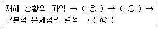
- ㉠사실의 확인, ㉡문제점의 발견, ㉢대책수립
- ㉠문제점의 발견, ㉡사실의 확인, ㉢대책수립
- ㉠사실의 확인, ㉡대책수립, ㉢문제점의 발견
- ㉠문제점의 발견, ㉡대책수립, ㉢사실의 확인
(정답률: 82%)
3. 교육심리학의 학습이론에 관한 설명 중 옳은 것은?
- 파블로프(Pavlov)의 조건반사설은 맹목적 시행을 반복하는 가운데 자극과 반응이 결합하여 행동하는 것이다.
- 레빈(Lewin)의 장설은 후천적으로 얻게 되는 반사작용으로 행동을 발생시킨다는 것이다.
- 톨만(Tolman)의 기호형태설은 학습자의 머리 속에 인지적 지도 같은 인지구조를 바탕으로 학습하려는 것이다.
- 손다이크(Thomdike)의 시행착오설은 내적, 외적의 전체구조를 새로운 시점에서 파악하여 행동하는 것이다.
(정답률: 65%)
4. 레빈(Lewin)의 법칙 B=f(PㆍE) 중 B가 의미하는 것은?
- 인간관계
- 행동
- 환경
- 함수
(정답률: 84%)
5. 학습지도의 형태 중 몇 사람의 전문가에 의해 과정에 관한 견해를 발표하고 참가자로 하여금 의견이나 질문을 하게 하는 토의방식은?
- 포럼(Forum)
- 심포지엄(Symposium)
- 버즈세션(Buzz session)
- 자유토의법(Free discussion method)
(정답률: 82%)
6. 산업안전보건법령상 지방고용노동관서의 장이 사업주에게 안전관리자ㆍ보건관리자 또는 안전보건관리담당자를 정수 이상으로 증원하게 하거나 교체하여 임명할 것을 명할 수 잇는 경우의 기준 중 다음 ( ) 안에 알맞은 것은?(2020년 1월 16일 개정된 규정 적용)
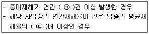
- ㉠ 3, ㉡ 2
- ㉠ 2, ㉡ 3
- ㉠ 2, ㉡ 2
- ㉠ 3, ㉡ 3
(정답률: 63%)
7. 하인리히(Heinrich)의 재해구성비율에 따른 58건의 경상이 발생한 경우 무상해 사고는 몇 건이 발생하겠는가?
- 58건
- 116건
- 600건
- 900건
(정답률: 88%)
8. 상해 정도별 분류 중 의사의 진단으로 일정 기간 정규 노동에 종사할 수 없는 상해에 해당하는 것은?
- 영구 일부노동 불능상해
- 일시 전노동 불능상해
- 영구 전노동 불능상해
- 구급처치 상해
(정답률: 84%)
9. 데이비스(Davis)의 동기부여이론 중 동기유발의 식으로 옳은 것은?
- 지식 × 기능
- 지식 × 태도
- 상황 × 기능
- 상황 × 태도
(정답률: 74%)
10. 안전보건관리조직의 유형 중 스탭형(Staff) 조직의 특징이 아닌 것은?
- 생산부문은 안전에 대한 책임과 권한이 없다.
- 권한 다툼이나 조정 때문에 통제수속이 복잡해지며 시간과 노력이 소모된다.
- 생산부분에 협력하여 안전명령을 전달, 실시하므로 안전지시가 용이하지 않으며 안전과 생산을 별개로 취급하기 쉽다.
- 명령 계통과 조언 권고적 참여가 혼동되기 쉽다.
(정답률: 54%)
11. 자율검사프로그램을 인정받기 위해 보유하여야 할 검사장비의 이력카드 작성, 교정주기와 방법 설정 및 관리 등의 관리 주체는?
- 사업주
- 제조사
- 안전관리전문기관
- 안전보건관리책임자
(정답률: 72%)
12. 다음의 방진마스크 형태로 옳은 것은?
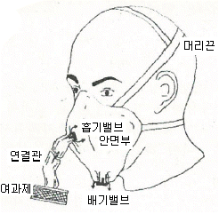
- 직결식 전면형
- 직결식 반면형
- 격리식 전면형
- 격리식 반면형
(정답률: 71%)
13. 작업자 적성의 요인이 아닌 것은?
- 성격(인간성)
- 지능
- 인간의 연령
- 흥미
(정답률: 81%)
14. 산업안전보건법령상 근로자 안전ㆍ보건교육 기준 중 관리감독자 정기안전ㆍ보건교육의 교육내용으로 옳은 것은? (단, 산업안전보건법 및 일반관리에 관한 사항은 제외한다.)(관련 규정 개정전 문제로 여기서는 기존 정답인 4번을 누르면 정답 처리됩니다. 자세한 내용은 해설을 참고하세요.)
- 산업안전 및 사고 예방에 관한 사항
- 사고 발생 시 긴급조치에 관한 사항
- 건강증진 및 질병 예방에 관한 사항
- 산업보건 및 직업병 예방에 관한 사항
(정답률: 72%)
15. 산업안전보건법령상 안전ㆍ보건표지의 색채와 색도기분의 연결이 틀린 것은? (단, 색도기준은 한국산업표준(KS)에 따른 색의 3속성에 의한 표시방법에 따른다.)
- 빨간색 - 7.5R 4/14
- 노란색 - 5Y 8.5/12
- 파란색 - 2.5PB 4/10
- 흰색 - N0.5
(정답률: 81%)
16. 강도율에 관한 설명 중 틀린 것은?
- 사망 및 영구 전노동불능(신체장해등급1~3급)의 근로손실일수는 7500일로 환산한다.
- 신체장애 등급 중 제14급은 근로손실일수를 50일로 환산한다.
- 영구 일부 노동불능은 신체 장해등급에 따른 근로손실일수에 300/365을 곱하여 환산한다.
- 일시 전노동 불능은 휴업일수에 300/365을 곱하여 근로손실일수를 환산한다.
(정답률: 74%)
17. 산업안전보건법령상 안전ㆍ보건표지의 종류 중 경고표지의 기본모형(형태)이 다른 것은?
- 폭발성물질 경고
- 방사성물질 경고
- 매달린 물체 경고
- 고압전기 경고
(정답률: 68%)
18. 석면 취급장소에서 사용하는 방진마스크의 등급으로 옳은 것은?
- 특급
- 1급
- 2급
- 3급
(정답률: 84%)
19. 적응기제 중 도피기제의 유형이 아닌 것은?
- 합리화
- 고립
- 퇴행
- 억압
(정답률: 76%)
20. 생체 리듬(Bio Rhythm)중 일반적으로 33일을 주기로 반복되며, 상상력, 사고력, 기억력 또는 의지, 판단 및 비판력 등과 깊은 관련성을 갖는 리듬은?
- 육체적 리듬
- 지성적 리듬
- 감성적 리듬
- 생활 리듬
(정답률: 73%)
2과목: 인간공학 및 시스템안전공학
21. 에너지 대사율(RMR)에 대한 설명으로 틀린 것은?
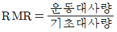
- 보통작업시 RMR은 4~7임
- 가벼운 작업시 RMR은 0~2임
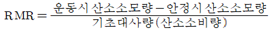
(정답률: 66%)
22. FMEA의 특징에 대한 설명으로 틀린 것은?
- 서브시스템 분석 시 FTA보다 효과적이다.
- 시스템 해석기법은 정성적ㆍ귀납적 분석법 등에 사용된다.
- 각 요소간 영향 해석이 어려워 2 가지 이상 동시 고장은 해석이 곤란하다.
- 양식이 비교적 간단하고 적은 노력으로 특별한 훈련 없이 해석이 가능하다.
(정답률: 46%)
23. A사의 안전관리자는 자사 화학 설비의 안전성 평가를 위해 제2단계인 정성적 평가를 진행하기 위하여 평가 항목 대상을 분류하였다. 주요 평가 항목 중에서 설계관계항목이 아닌 것은?
- 건조물
- 공장 내 배치
- 입지조건
- 원재료, 중간제품
(정답률: 74%)
24. 기계설비 고장 유형 중 기계의 초기결함을 찾아내 고장률을 안정시키는 기간은?
- 마모고장 기간
- 우발고장 기간
- 에이징(aging) 기간
- 디버깅(debugging) 기간
(정답률: 76%)
25. 들기 작업 시 요통재해예방을 위하여 고려할 요소와 가장 거리가 먼 것은?
- 들기 빈도
- 작업자 신장
- 손잡이 형상
- 허리 비대칭 각도
(정답률: 67%)
26. 일반적으로 작업장에서 구성요소를 배치할 때, 공간의 배치 원칙에 속하지 않는 것은?
- 사용빈도의 원칙
- 중요도의 원칙
- 공정개선의 원칙
- 기능성의 원칙
(정답률: 68%)
27. 반사율이 60%인 작업 대상물에 대하여 근로자가 검사작업을 수행할 때 휘도(luminance)가 90fL 이라면 이 작업에서의 소요조명(fc)은 얼마인가?
- 75
- 150
- 200
- 300
(정답률: 68%)
28. 산업안전보건법령상 유해하거나 위험한 장소에서 사용하는 기계ㆍ기구 및 설비를 설치ㆍ이전하는 경우 유해ㆍ위험방지계획서를 작성, 제출하여야 하는 대상이 아닌 것은?
- 화학설비
- 금속 용해로
- 건조설비
- 전기용접장치
(정답률: 70%)
29. 동작경제의 원칙에 해당하지 않는 것은?
- 공구의 기능을 각각 분리하여 사용하도록 한다.
- 두 팔의 동작은 동시에 서로 반대방향으로 대칭적으로 움직이도록 한다.
- 공구나 재료는 작업동작이 원활하게 수행되도록 그 위치를 정해준다.
- 가능하다면 쉽고도 자연스러운 리듬이 작업동작에 생기도록 작업을 배치한다.
(정답률: 72%)
30. 휴먼 에러 예방 대책 중 인적 요인에 대한 대책이 아닌 것은?
- 설비 및 환경 개선
- 소집단 활동의 활성화
- 작업에 대한 교육 및 훈련
- 전문인력의 적재적소 배치
(정답률: 73%)
31. 다음 시스템에 대하여 톱사상(top event)에 도달할 수 있는 최소 컷셋(minimal cutsets)을 구할 때 올바른 집합은? (단, X1,X2,X3,X4는 각 부품의 고장확률을 의미하며 집합{X1,X2}는 X1부품과 X2부품이 동시에 고장 나는 경우를 의미한다.
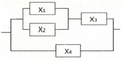
- {X1,X2}, {X3,X4}
- {X1,X3},{X2,X4}
- {X1,X2,X4},{X3,X4}
- {X1,X3,X4},{X2,X3,X4}
(정답률: 52%)
32. 운동관계의 양립성을 고려하여 동목(moving scale)형 표시장치를 바람직하게 설계한 것은?
- 눈금과 손잡이가 같은 방향으로 회전하도록 설계한다.
- 눈금의 숫자는 우측으로 감소하도록 설계한다.
- 꼭지의 시계 방향 회전이 지시치를 감소시키도록 설계한다.
- 위의 세 가지 요건을 동시에 만족시키도록 설계한다.
(정답률: 73%)
33. 신뢰성과 보전성 개선을 목적으로 한 효과적인 보전기록자료에 해당하는 것은?
- 자재관리표
- 주유지시서
- 재고관리표
- MTBF 분석표
(정답률: 80%)
34. 보기의 실내면에서 빛의 반사율이 낮은 곳에서부터 높은 순서대로 나열한 것은?
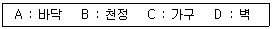
- A＜B＜C＜D
- A＜C＜B＜D
- A＜C＜D＜B
- A＜D＜C＜B
(정답률: 74%)
35. 다음 시스템의 신뢰도는 얼마인가? (단, 각 요소의 신뢰도는 a, b가 각 0.8, c, d 가 각 0.6이다.)
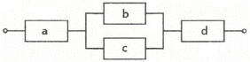
- 0.2245
- 0.3754
- 0.4416
- 0.5756
(정답률: 74%)
36. FTA(Fault Tree Analysis)에 사용되는 논리 기호와 명칭이 올바르게 연결된 것은?
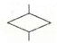
: 전이기호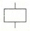
: 기본사상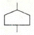
: 통상사상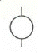
: 결함사상
(정답률: 75%)
37. HAZOP 기법에서 사용하는 가이드워드와 그 의미가 잘못 연결된 것은?
- Other than : 기타 환경적인 요인
- No/Not : 디자인 의도의 완전한 부정
- Reverse : 디자인 의도의 논리적 반대
- More/Less : 전량적인 증가 또는 감소
(정답률: 77%)
38. 경계 및 경보신호의 설계지침으로 틀린 것은?
- 주의를 환기시키기 위하여 변조된 신호를 사용한다.
- 배경소음의 진동수와 다른 진동수의 신호를 사용한다.
- 귀는 중음역에 민감하므로 500 ~ 3000Hz 의 진동수를 사용한다.
- 300 m 이상의 장거리용으로는 1000Hz 를 초과하는 진동수를 사용한다.
(정답률: 60%)
39. 동작의 합리화를 위한 물리적 조건으로 적절하지 않은 것은?
- 고유 진동을 이용한다.
- 접촉 면적을 크게 한다.
- 대체로 마찰력을 감소시킨다.
- 인체표면에 가해지는 힘을 적게 한다.
(정답률: 63%)
40. 정량적 표시장치에 관한 설명으로 맞는 것은?
- 정확한 값을 읽어야 하는 경우 일반적으로 디지털보다 아날로그 표시장치가 유리하다.
- 동목(moving scale)형 아날로그 표시장치는 표시장치의 면적을 최소화할 수 있는 장점이 있다.
- 연속적으로 변화하는 양을 나타내는 데에는 일반적으로 아날로그보다 디지털 표시장치가 유리하다.
- 동침(moving pointer)형 아날로그 표시장치는 바늘의 진행 방향과 증감 속도에 대한 인식적인 암시 신호를 얻는 것이 불가능한 단점이 있다.
(정답률: 57%)
3과목: 기계위험방지기술
41. 로봇의 작동범위 내에서 그 로봇에 관하여 교시 등(로봇의 동력원을 차단하고 행하는 것을 제외한다.)의 작업을 행하는 때 작업시작 전 점검 사항으로 옳은 것은?
- 과부하방지장치의 이상 유무
- 압력제한 스위치 등의 기능의 이상 유무
- 외부전선의 피복 또는 외장의 손상 유무
- 권과방지장치의 이상 유무
(정답률: 73%)
42. 방사선 투과검사에서 투과사진에 영향을 미치는 인자는 크게 콘트라스트(명암도)와 명료도로 나누어 검토할 수 있다. 다음 중 투과사진의 콘트라스트(명암도)에 영향을 미치는 인자에 속하지 않는 것은?
- 방사선의 선질
- 필림의 종류
- 현상액의 강도
- 초점-필름간 거리
(정답률: 54%)
43. 보기와 같은 기계요소가 단독으로 발생시키는 위험점은?
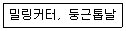
- 협착점
- 끼임점
- 절단점
- 물림점
(정답률: 78%)
44. 프레스 및 전단기에서 위험한계 내에서 작업하는 작업자의 안전을 위하여 안전블록의 사용 등 필요한 조치를 취해야 한다. 다음 중 안전 블록을 사용해야 하는 직업으로 가장 거리가 먼 것은?
- 금형 가공작업
- 금형 해체작업
- 금형 부착작업
- 금형 조정작업
(정답률: 69%)
45. 아세틸렌 용접장치를 사용하여 금속의 용접ㆍ용단 또는 가열작업을 하는 경우 아세틸렌을 발생시키는 게이지 압력은 최대 몇 kPa 이하이어야 하는가?
- 17
- 88
- 127
- 210
(정답률: 82%)
46. 산업안전보건법령상 프레스 작업시작 전 점검해야 할 사항에 해당하는 것은?
- 언로드 밸브의 기능
- 하역장치 및 유압장치 기능
- 권과방지장치 및 그 밖의 경보장치의 기능
- 1행정 1정지기구ㆍ급정지장치 및 비상정지 장치의 기능
(정답률: 67%)
47. 화물중량이 200kgf, 지게차의 중량이 400kgf, 앞바퀴에서 화물의 무게중심까지의 최단거리가 1m일 때 지게차의 무게중심까지 최단거리는 최소 몇 m 를 초과해야하는가?
- 0.2m
- 0.5m
- 1m
- 2m
(정답률: 68%)
48. 다음 중 셰이퍼에서 근로자의 보호를 위한 방호장치가 아닌 것은?
- 방책
- 칩받이
- 칸막이
- 급속귀환장치
(정답률: 67%)
49. 지게차 및 구내 운반차의 작업시작 전 점검 사항이 아닌 것은?
- 버킷, 디퍼 등의 이상유무
- 제동장치 및 조종장치 기능의 이상 유무
- 하역장치 및 유압장치
- 전조등, 후미등, 경보장치 기능의 이상 유무
(정답률: 68%)
50. 다음 중 선반에서 절삭가공시 발생하는 칩을 짧게 끊어지도록 공구에 설치되어 있는 방호장치의 일종인 칩 제거기구를 무엇이라 하는가?
- 칩 브레이커
- 칩 받침
- 칩 쉴드
- 칩 커터
(정답률: 82%)
51. 아세틸렌 용접장치에 사용하는 역화방지기에서 요구되는 일반적인 구조로 옳지 않은 것은?
- 재사용 시 안전에 우려가 있으므로 역화방지 후 바로 폐기하도록 해야 한다.
- 다듬질 면이 매끈하고 사용상 지장이 있는 부식, 흠, 균열 등이 없어야 한다.
- 가스의 흐름방향은 지워지지 않도록 돌출 또는 각인하여 표시하여야 한다.
- 소염소자는 금망, 소결금속, 스틸울(steelwool), 다공성 금속물 또는 이와 동등 이상의 소염성능을 갖는 것이어야 한다.
(정답률: 65%)
52. 초음파 탐상법의 종류에 해당하지 않는 것은?
- 반사식
- 투과식
- 공진식
- 침투식
(정답률: 47%)
53. 다음 목재가공용 기계에 사용되는 방호장치의 연결이 옳지 않은 것은?
- 둥근톱기계 : 톱날접촉예방장치
- 띠톱기계 : 날접촉예방장치
- 모떼기기계 : 날접촉예방장치
- 동력식 수동대패기계 : 반발예방장치
(정답률: 66%)
54. 급정지기구가 부착되어 있지 않아도 유효한 프레스의 방호장치로 옳지 않은 것은?
- 양수기동식
- 가드식
- 손쳐내기식
- 양수조작식
(정답률: 51%)
55. 인장강도가 350MPa인 강판의 안전율이 4 라면 허용응력은 몇 N/mm2인가?
- 76.4
- 87.5
- 98.7
- 102.3
(정답률: 81%)
56. 그림과 같이 50kN의 중량물을 와이어 로프를 이용하여 상부에 60°의 각도가 되도록 들어 올릴 때, 로프 하나에 걸리는 하중(T)은 약 몇 kN인가?
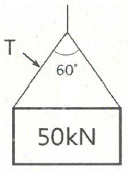
- 16.8
- 24.5
- 28.9
- 37.9
(정답률: 52%)
57. 다음 중 휴대용 동력 드릴 작업시 안전사항에 관한 설명으로 틀린 것은?
- 드릴의 손잡이를 견고하게 잡고 작업하여 드릴손잡이 부위가 회전하지 않고 확실하게 제어 가능하도록 한다.
- 절삭하기 위하여 구멍에 드릴날을 넣거나 뺄 때 반발에 의하여 손잡이 부분이 튀거나 회전하여 위험을 초래하지 않도록 팔을 드릴과 직선으로 유지한다.
- 그릴이나 리머를 고정시키거나 제거하고자 할 때 금속성 망치 등을 사용하여 확실히 고정 또는 제거한다.
- 드릴을 구멍에 맞추거나 스핀들의 속도를 낮추기 위해서 드릴날을 손으로 잡아서는 안 된다.
(정답률: 76%)
58. 보일러에서 폭발사고를 미연에 방지하기 위해 화염 상태를 검출할 수 있는 장치가 필요하다. 이 중 바이메탈을 이용하여 화염을 검출하는 것은?
- 프레임 아이
- 스택 스위치
- 전자 개폐기
- 프레임 로드
(정답률: 47%)
59. 밀링작업 시 안전 수칙에 관한 설명으로 옳지 않은 것은?
- 칩은 기계를 정지시킨 다음에 브러시 등으로 제거한다.
- 일감 또는 부속장치 등을 설치하거나 제거할 때는 반드시 기계를 정지시키고 작업한다.
- 커터는 될 수 있는 한 컬럼에서 멀게 설치한다.
- 강력 절삭을 할 때는 일감을 바이스에 깊게 물린다.
(정답률: 79%)
60. 다음 중 방호장치의 기본목적과 가장 관계가 먼 것은?
- 작업자의 보호
- 기계기능의 향상
- 인적ㆍ물적 손실의 방지
- 기계위험 부위의 접촉방지
(정답률: 81%)
4과목: 전기위험방지기술
61. 화재ㆍ폭발 위험분위기의 생성방지 방법으로 옳지 않은 것은?
- 폭발성 가스의 누설 방지
- 가연성 가스의 방출 방지
- 폭발성 가스의 체류 방지
- 폭발성 가스의 옥내 체류
(정답률: 78%)
62. 우리나라에서 사용하고 있는 접압(교류와 직류)을 크기에 따라 구분한 것으로 알맞은 것은?(관련 규정 개정전 문제로 여기서는 기존 정답인 2번을 누르면 정답 처리됩니다. 자세한 내용은 해설을 참고하세요.)
- 저압 : 직류는 700V 이하
- 저압 : 교류는 600V 이하
- 고압 : 직류는 800V를 초과하고, 6kV 이하
- 고압 : 교류는 700V를 초과하고, 6kV 이하
(정답률: 74%)
63. 내압방폭구조의 주요 시험항목이 아닌 것은?
- 폭발강도
- 인화시험
- 절연시험
- 기계적 강도시험
(정답률: 60%)
64. 교류아크 용접기의 접점방식(Magnet식)의 전격방지장치에서 지동시간과 용접기 2차측 무부하전압(V)을 바르게 표현한 것은?
- 0.06초 이내, 25V 이하
- 1±0.3초 이내, 25V 이하
- 2±0.3초 이내, 50V 이하
- 1.5±0.06초 이내, 50V 이하
(정답률: 65%)
65. 누전차단기의 시설방법 중 옳지 않은 것은?
- 시설장소는 배전반 또는 분전반 내에 설치한다.
- 정격전류용량은 해당 전로의 부하전류 값 이상이여야 한다.
- 정격감도전류는 정상의 사용상태에서 불필요하게 동작하지 않도록 한다.
- 인체감전보호형은 0.⑤초 이내에 동작하는 고감도고속형이어야 한다.
(정답률: 74%)
66. 방폭전기기기의 온도등급에서 기호 T2의 의미로 맞는 것은?
- 최고표면온도의 허용치가 135℃이하인 것
- 최고표면온도의 허용치가 200℃이하인 것
- 최고표면온도의 허용치가 300℃이하인 것
- 최고표면온도의 허용치가 450℃이하인 것
(정답률: 58%)
67. 사업장에서 많이 사용되고 있는 이동식 전기기계ㆍ기구의 안전대책으로 가장 거리가 먼 것은?
- 충전부 전체를 절연한다.
- 절연이 불량인 경우 접지저항을 측정한다.
- 금속제 외함이 있는 경우 접지를 한다.
- 습기가 많은 장소는 누전차단기를 설치한다.
(정답률: 52%)
68. 감전사고를 방지하기 위해 허용보폭전압에 대한 수식으로 맞는 것은?
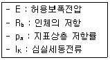
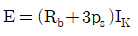
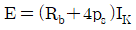
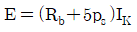
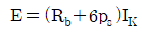
(정답률: 48%)
69. 인체저항이 5000Ω이고, 전류가 3mA가 흘렀다. 인제의 정전용량이 0.1μF라면 인체에 대전된 정전하는 몇μC 인가?
- 0.5
- 1.0
- 1.5
- 2.0
(정답률: 56%)
70. 저압전로의 절연성능 시험에서 전로의 사용전압이 380V인 경우 전로의 전선 상호간 및 전로와 대지 사이의 절연저항은 최소 몇 MΩ 이상이어야 하는가?(관련 규정 개정전 문제로 여기서는 기존 정답인 2번을 누르면 정답 처리됩니다. 자세한 내용은 해설을 참고하세요.)
- 0.4MΩ
- 0.3MΩ
- 0.2 MΩ
- 0.1 MΩ
(정답률: 74%)
71. 방폭전기기기의 등급에서 위험장소의 등급분류에 해당되지 않는 것은?
- 3종 장소
- 2종 장소
- 1종 장소
- 0종 장소
(정답률: 77%)
72. 다음은 무슨 현상을 설명한 것인가?
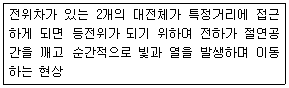
- 대전
- 충전
- 방전
- 열전
(정답률: 66%)
73. 다음 그림은 심장맥동주기를 나타낸 것이다. T파는 어떤 경우인가?
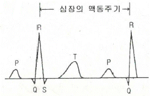
- 심방의 수축에 따른 파형
- 심실의 수축에 따른 파형
- 심실의 휴식 시 발생하는 파형
- 심방의 휴식 시 발생하는 파형
(정답률: 71%)
74. 교류 아크 용점기의 자동전격장치는 전격의 위험을 방지하기 위하여 아크 발생이 중단된후 약 1초 이내에 출력측 무부하 전압을 자동적으로 몇 V 이하로 저하시켜야 하는가?
- 85
- 70
- 50
- 25
(정답률: 73%)
75. 인체의 대부분이 수중에 있는 상태에서 허용접촉전압은 몇 V 이하 인가?
- 2.5V
- 25V
- 30V
- 50V
(정답률: 69%)
76. 우리나라의 안전전압으로 볼 수 있는 것은 약 몇 V 인가?
- 30V
- 50V
- 60V
- 70V
(정답률: 73%)
77. 22.9kV 충전전로에 대해 필수적으로 작업자와 이격시켜야 하는 접근한계 거리는?
- 45cm
- 60cm
- 90cm
- 110cm
(정답률: 52%)
78. 개폐조작 시 안전절차에 따른 차단 순서와 투입 순서로 가장 올바른 것은?
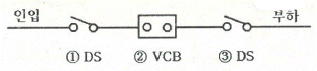
- 차단 ②→①→③, 투입 ①→②→③
- 차단 ②→③→①, 투입 ①→②→③
- 차단 ②→①→③, 투입 ③→②→①
- 차단 ②→③→①, 투입 ③→①→②
(정답률: 75%)
79. 정전기에 대한 설명으로 가장 옳은 것은?
- 전하의 공간적 이동이 크고, 자계의 효과가 전계의 효과에 비해 매우 큰 전기
- 전하의 공간적 이동이 크고, 자계의 효과와 전계의 효과를 서로 비교할 수 없는 전기
- 전하의 공간적 이동이 적고, 전계의 효과와 자계의 효과가 서로 비슷한 전기
- 전하의 공간적 이동이 적고, 자계의 효과가 전계에 비해 무시할 정도의 적은 전기
(정답률: 58%)
80. 인체저항을 500Ω이라 한다면, 심실세동을 일으키는 위험 한계 에너지는 약 몇 J 인가? (단, 심실세동전류값
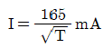
의 Dalziel의 식을 이용하며, 통전시간은 1초로 한다.)- 11.5
- 13.6
- 15.3
- 16.2
(정답률: 79%)
5과목: 화학설비위험방지기술
81. 다음 물질 중 물에 가장 잘 용해되는 것은?
- 아세톤
- 벤젠
- 톨루엔
- 휘발유
(정답률: 76%)
82. 다음 중 최소발화에너지가 가장 작은 가연성 가스는?
- 수소
- 메탄
- 에탄
- 프로판
(정답률: 70%)
83. 안전설계의 기초에 있어 기상폭발대책을 예방대책, 긴급대책, 방호대책으로 나눌 때, 다음 중 방호대책과 가장 관계가 깊은 것은?
- 경보
- 발화의 저지
- 방폭벽과 안전거리
- 가연조건의 성립저지
(정답률: 63%)
84. 공정안전보고서 중 공정안전자료에 포함 하여야 할 세부내용에 해당하는 것은?
- 비상조치계획에 따른 교육계획
- 안전운전지침서
- 각종 건물ㆍ설비의 배치도
- 도급업체 안전관리계획
(정답률: 51%)
85. 다음 중 물질에 대한 저장방법으로 잘못된 것은?
- 나트륨 - 유동 파라핀 속에 저장
- 니트로글리세린 - 강산화제 속에 저장
- 적린 - 냉암소에 격리 저장
- 칼륨 - 등유 속에 저장
(정답률: 60%)
86. 화학설비 가운데 분체화학물질 분리장치에 해당하지 않는 것은?
- 건조기
- 분쇄기
- 유동탑
- 결정조
(정답률: 48%)
87. 특수화학설비를 설치할 떄 내부의 이상상태를 조기에 파악하기 위하여 필요한 계측장치로 가장 거리가 먼 것은?
- 압력계
- 유량계
- 온도계
- 비중계
(정답률: 72%)
88. 위험물 또는 위험물이 발생하는 물질을 가열ㆍ건조하는 경우 내용적이 몇 세제곱미터 이상인 건조설비인 경우 건조실을 설치하는 건축물의 구조를 독립된 단층건물로 하여야 하는가? (단, 건조실을 건축물의 최상층에 설치하거나 건축물이 내화구조인 경우는 제외한다.)
- 1
- 10
- 100
- 1000
(정답률: 54%)
89. 공기 중에서 폭발범위가 12.5~74vol%인 일산화탄소의 위험도는 얼마인가?
- 4.92
- 5.26
- 6.26
- 7.⑤
(정답률: 69%)
90. 숯, 코크스, 목탄의 대표적인 연소 형태는?
- 혼합연소
- 증발연소
- 표면연소
- 비혼합연소
(정답률: 77%)
91. 다음 중 자연발화가 가장 쉽게 일어나기 위한 조건에 해당하는 것은?
- 큰 열전도율
- 고온, 다습한 환경
- 표면적이 작은 물질
- 공기의 이동이 많은 장소
(정답률: 65%)
92. 위험물에 관한 설명으로 틀린 것은?
- 이황화탄소의 인화점은 0℃ 보다 낮다.
- 과염소산은 쉽게 연소되는 가연성 물질이다.
- 황린은 물속에 저장한다.
- 알킬알루미늄은 물과 격렬하게 반응한다.
(정답률: 46%)
93. 물과 반응하여 가연성 기체를 발생하는 것은?
- 프크린산
- 이황화탄소
- 칼륨
- 과산화칼륨
(정답률: 56%)
94. 프로판(C3H8)의 연소하한계가 2.2vol% 일 때 연소를 위한 최소산소농도(MOC)는 몇 vol%인가?
- 5.0
- 7.0
- 9.0
- 11.0
(정답률: 46%)
95. 다음 중 유기과산화물로 분류되는 것은?
- 메틸에틸케톤
- 과망간산칼륨
- 과산화마그네슘
- 과산화벤조일
(정답률: 48%)
96. 연소이론에 대한 설명으로 틀린 것은?
- 착화온도가 낮을수록 연소위험이 크다.
- 인화점이 낮은 물질은 반드시 착화점도 낮다.
- 인화점이 낮을수록 일반적으로 연소위험이 크다.
- 연소범위가 넓을수록 연소위험이 크다.
(정답률: 76%)
97. 디에틸에테르의 연소범위에 가장 가까운 값은?
- 2~10.4%
- 1.9~48%
- 2.5~15%
- 1.5~7.8%
(정답률: 58%)
98. 송풍기의 회전차 속도가 1300rpm 일 때 송풍량이 분당 300m3였다. 송풍량을 분당 400m3으로 증가시키고자 한다면 송풍기의 회전차 속도는 약 몇 rpm으로 하여야 하는가?
- 1533
- 1733
- 1967
- 2167
(정답률: 66%)
99. 다음 중 물과 반응하였을 때 흡열반응을 나타내는 것은?
- 질산암모늄
- 탄화칼슘
- 나트륨
- 과산화칼륨
(정답률: 45%)
100. 다음 중 노출기준(TWA)이 가장 낮은 물질은?
- 염소
- 암모니아
- 에탄올
- 메탄올
(정답률: 62%)
6과목: 건설안전기술
101. 보통 흙의 건지를 다음 그림과 같이 굴착하고자 한다. 굴착면의 기울기를 1:0.5로 하고자 할 경우 L의 길이로 옳은 것은?
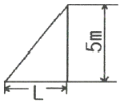
- 2m
- 2.5m
- 5m
- 10m
(정답률: 64%)
102. 흙막이 지보공을 조립하는 경우 미리 조립도를 작성하여야 하는데 이 조립도에 명시되어야 할 사항과 가장 거리가 먼 것은?
- 부재의 배치
- 부재의 치수
- 부재의 긴압정도
- 설치방법과 순서
(정답률: 53%)
103. 미리 작업장소의 지형 및 지반상태 등에 적합한 제한속도를 정하지 않아도 되는 차량계 건설기계의 속도 기준은?
- 최대 제한 속도가 10km/h 이하
- 최대 제한 속도가 20km/h 이하
- 최대 제한 속도가 30km/h 이하
- 최대 제한 속도가 40km/h 이하
(정답률: 75%)
104. 터널공사에서 발파작업 시 안전대책으로 옳지 않은 것은?
- 발파전 도화선 연결상태, 저항시 조사 등의 목적으로 도통시험 실시 및 발파기의 작동상태에 대한 사전점검 실시
- 모든 동력선은 발원점으로부터 최소한 15m 이상 후방으로 옮길 것
- 지질, 암의 절리 등에 따라 화약량에 대한 검토 및 시방기준과 대비하여 안전조치 실시
- 발파용 점화회선은 타동력선 및 조명회선과 한곳으로 통합하여 관리
(정답률: 75%)
1⑤. 달비계의 최대 적재하중을 정함에 있어서 활용하는 안전계수의 기준으로 옳은 것은? (단, 곤돌라의 달비계를 제외한다.)
- 달기 와이어로프 : 5 이상
- 달기 강선 : 5 이상
- 달기 체인 : 3 이상
- 달기 훅 : 5 이상
(정답률: 66%)
106. 다음 보기의 ( ) 안에 알맞은 내용은?
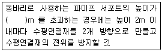
- 3
- 3.5
- 4
- 4.5
(정답률: 37%)
107. 건립 중 강풍에 의한 풍압 등 외압에 대한 내력이 설계에 고려되었는지 확인하여야 하는 철골 구조물이 아닌 것은?
- 단면이 일정한 구조물
- 기둥이 타이플레이트형인 구조물
- 이음부가 현장용접인 구조물
- 구조물의 폭과 높이의 비가 1:4 이상인 구조물
(정답률: 56%)
108. 건설업 산업안전보건관리비 중 안전시설비로 사용할 수 없는 것은?
- 안전통로
- 비계에 추가 설치하는 추락방지용 안전난간
- 사다리 전도방지장치
- 통로의 낙하물 방호선반
(정답률: 63%)
109. 터널 등의 건설작업을 하는 경우에 낙반 등에 의하여 근로자가 위험해질 우려가 있는 경우에 필요한 조치와 가장 거리가 먼 것은?
- 터널 지보공을 설치한다.
- 록볼트를 설치한다.
- 환기, 조명시설을 설치한다.
- 부석을 제거한다.
(정답률: 71%)
110. 강관을 사용하여 비계를 구성하는 경우 준수해야할 사항으로 옳지 않은 것은?(관련 규정 개정전 문제로 여기서는 기존 정답인 3번을 누르면 정답 처리됩니다. 자세한 내용은 해설을 참고하세요.)
- 비계기둥의 간격은 띠장 방향에서는 1.5m 이상 1.8m 이하, 장선 방향에서는 1.5m 이하로 할 것
- 띠장 간격은 1.5m 이하로 설치하되, 첫 번째 띠장은 지상으로부터 2m 이하의 위치에 설치할 것
- 비계기둥의 제일 윗부분으로부터 31m되는 지점 밑부분의 비계기둥은 3개의 강관으로 묶어 세울 것
- 비계기둥 간의 적재하중은 400kg을 초과하지 않도록 할 것
(정답률: 73%)
111. 이동식비계 조립 및 사용 시 준수사항으로 옳지 않은 것은?
- 비계의 최상부에서 작업을 하는 경우에는 안전난간을 설치할 것
- 승강용 사다리는 견고하게 설치할 것
- 작업발판은 항상 수평을 유지하고 작업발판 위에서 작업을 위한 거리가 부족할 경우에는 받침대 또는 사다리를 사용할 것
- 작업발판의 최대적재하중은 250kg을 초과하지 않도록 할 것
(정답률: 64%)
112. 유해ㆍ위험 방지를 위한 방호조치를 하지 아니하고는 양도, 대여, 설치 또는 사용에 제동하거나, 양도ㆍ대여를 목적으로 진열해서는 아니 되는 기계ㆍ기구에 해당하지 않는 것은?
- 지게차
- 공기압축기
- 원심기
- 덤프트럭
(정답률: 60%)
113. 화물운반하역 작업 중 걸이작업에 관한 설명으로 옳지 않은 것은?
- 와이어로프 등은 크레인의 후크 중심에 걸어야 한다.
- 인양 물체의 안정을 위하여 2줄 걸이 이상을 사용하여야 한다.
- 매다는 각도는 60° 이상으로 하여야 한다.
- 근로자를 매달린 물체위에 탑승시키지 않아야 한다.
(정답률: 66%)
114. 거푸집동바리 등을 조립하는 경우에 준수하여야 할 사항으로 옳지 않은 것은?
- 깔목의 사용, 콘크리트 타설, 말뚝박기 등 동바리의 침하를 방지하기 위한 조치를 할 것
- 개구부 상부에 동바리를 설치하는 경우에는 상부하중을 견딜 수 있는 견고한 받침대를 설치할 것
- 거푸집이 곡면인 경우에는 버팀대의 부착등 그 거푸집의 부상을 방지하기 위한 조치를 할 것
- 동바리의 이음은 맞댄이음이나 장부이음을 피할 것
(정답률: 75%)
115. 사업의 종류가 건설업이고, 공사금액이 850억원 일 경우 산업안전보건법령에 따른 안전관리자를 최소 몇 명 이상 두어야 하는가? (단, 상시근로자는 600명으로 가정)
- 1명 이상
- 2명 이상
- 3명 이상
- 4명 이상
(정답률: 68%)
116. 선박에서 하역작업 시 근로자들이 안전하게 오르내릴 수 있는 현문 사다리 및 안전망을 설치하여야 하는 것은 선박이 최소 몇 톤급 이상일 경우인가?
- 500톤급
- 300톤급
- 200톤급
- 100톤급
(정답률: 65%)
117. 타워크레인을 와이어로프로 지지하는 경우에 준수해야 할 사항으로 옳지 않은 것은?
- 와이어로프를 고정하기 위한 전용 지지프레임을 사용할 것
- 와이어로프 설치각도는 수평면에서 60° 이상으로 하되, 지지점은 4개소 미만으로 할 것
- 와이어로프와 그 고정부위는 충분한 강도와 장력을 갖도록 설치할 것
- 와이어로프가 가공전선에 근접하지 않도록 할 것
(정답률: 79%)
118. 터널붕괴를 방지하기 위한 지보공에 대한 점검사항과 가장 거리가 먼 것은?
- 부재의 긴압 정도
- 부재의 손상ㆍ변형ㆍ부식ㆍ변위 탈락의 유무 및 상태
- 기둥침하의 유무 및 상태
- 경보장치의 작동상태
(정답률: 74%)
119. 작업중이던 미장공이 상부에서 떨어지는 공구에 의해 상해를 입었다면 어느 부분에 대한 결함이 있었겠는가?
- 작업대 설치
- 작업방법
- 낙하물 방지시설 설치
- 비계설치
(정답률: 81%)
120. 이동식 크레인을 사용하여 작업을 할 때 작업시작 전 점검사항이 아닌 것은?
- 주행로의 상측 및 트롤리(trolley)가 횡행하는 레일의 상태
- 권과방지장치 그 밖의 경보장치의 기능
- 브레이크ㆍ클러치 및 조정장치의 기능
- 와이어로프가 통하고 있는 곳 및 작업장소의 지반상태
(정답률: 49%)